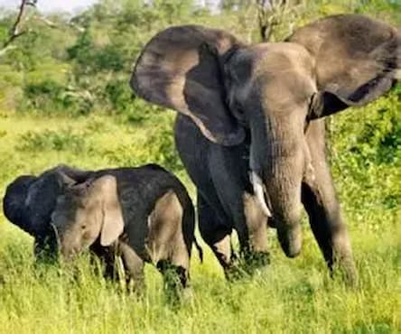
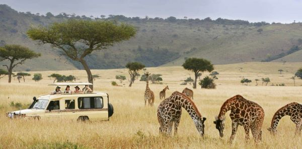
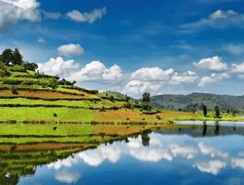
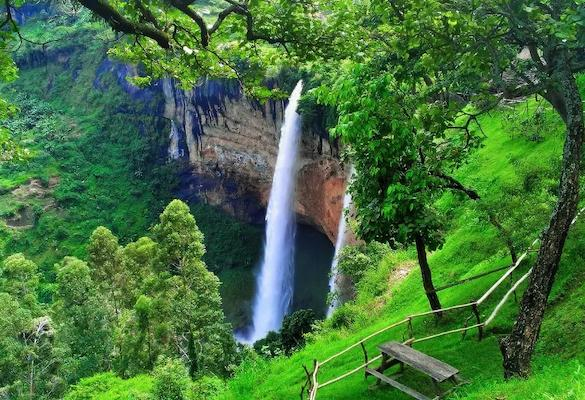
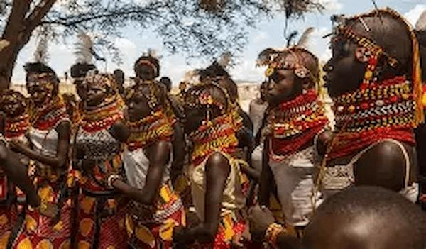

Travel Questions
What are the best tourist attractions? Uganda has national parks, wildlife, mountains and lakes.
When is the best time to travel? Dry seasons (June–August, December–February).


savannah sarfaris
Experience wildlife in national parks.



Mountain Hiking
Explore scenic trails and landscapes.



Cultural Tours
Discover traditions and local communities.